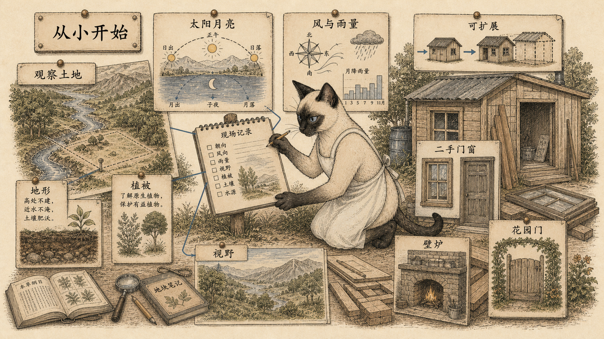

模块 01
从小开始，先研究土地
房子不是先从造型开始，而是先从地点、季节、风、雨、视野和人的变化开始。
先看图：小棚屋不是临时凑合，而是一种学习工具。它让建造者有时间观察太阳和月亮的升落、风向、雨量、植被、视野和季节温度，再决定真正的房子该怎么长出来。
有趣的是：劳埃德反省自己曾多次被抽象概念带进冗长、不实用的计划，后来发现鸡舍或小谷仓往往更可靠。二手门窗、卷材屋顶、简单框架、通向花园的厨房，比宏大造型更能让人继续生活。
为什么重要：建房不像画画，作品不满意不能随手丢掉。先小、保温好、听当地建议，是避免被房子拖垮的现实智慧。